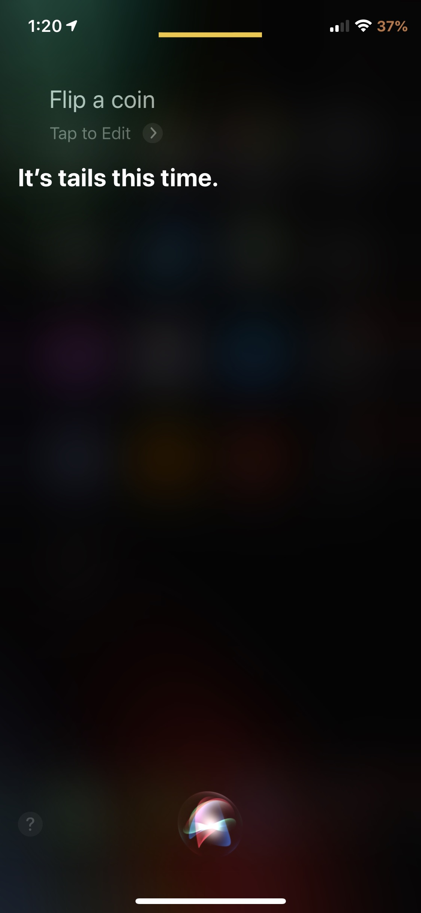

Compatibility
- Made for iOS 13
Description
- This tweak lets you control the outcome of Siri coin flips! Simply hold volume up (heads) or volume down (tails) before Siri responds and the outcome will always be in your control! Currently no options to configure.
screenshots

changelog
-
1.0.0
- Initial Release